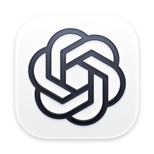

双栏会话工作台
按时间线与来源快速筛选会话，右栏采用用户靠右、AI 靠左的气泡布局，自动合并同一回合的连续工具回复段。
- 检索快捷键：
⌘K标题、正文与代码关键词 - 键盘快速切换：
↑/↓列表导航与右侧提问目录条 - 复用与导出：一键「复制为 Prompt」XML 上下文、Markdown 或
.md文件 - 窗口自适应：
< 600px窄屏（1/4 屏）自动切换底部标签栏
MemoCat 在本机统一归档 Codex、Claude Code、Grok Bot、Antigravity 的本地日志与 9 大网页 AI 平台的对话记录，存入单机 SQLite 数据库；支持双栏阅读、全文检索与 127.0.0.1:3792 HTTP MCP 跨工具记忆召回。

桌面端以只读方式解析本机客户端会话日志；浏览器扩展在用户授权的 AI 网页端采集已加载对话，并通过本机回环通道增量同步到同一资料库。
逐行流式读取，不回写或修改原始日志文件

~/.codex
~/.claude/projects
~/Library/.../Grok Bot
~/.gemini/antigravity
在支持的 AI 对话页面内嵌保存胶囊与侧边抽屉
后端仅使用 Node.js 24 内置模块与 node:sqlite，桌面端和本机网页版共享同一套检索、去重与权限校验核心。
按时间线与来源快速筛选会话，右栏采用用户靠右、AI 靠左的气泡布局，自动合并同一回合的连续工具回复段。
⌘K 标题、正文与代码关键词↑ / ↓ 列表导航与右侧提问目录条.md 文件< 600px 窄屏（1/4 屏）自动切换底部标签栏内置 SQLite WAL 与 FTS5 trigram 索引，同时结合面向对话回合结构的 BM25 邻域平滑算法，把召回片段控制在可用上下文预算内。
2.5 / AI 回复 1.0；主查询 1.0 / 补充词 0.728 个区域、累计约 9,600 token通过会话上下文标识与交付状态机记录每次召回，避免同一 AI 对话反复读入相同片段，并保留完整的取用审计记录。
process_id 并绑定调用方（caller）prepared / committed / abandoned 状态追踪桌面端或网页模式运行时默认监听 http://127.0.0.1:3792，通过无状态 JSON-RPC 2.0 POST 为各本地 AI 工具提供受控记忆检索，按客户端独立配置开关与允许读取的来源白名单。
接受主查询 query、最多 8 条同义/跨语言补充词 alternatives、日期范围 from/to、来源过滤与续传 process_id。触发前自动按需同步已开启来源，返回附带来源路径与时间的分段上下文。
按主机所在时区列出指定起止日期（含首尾最多 31 天）内的历史会话元数据清单，受当前客户端的资料来源白名单约束。
/mcp/codex、/mcp/claude-code 与 /mcp/other-local 拥有各自独立的启用开关和资料范围。未选定任何来源时拒绝取用；配置在检索途中变化时自动中止当前交付。
[mcp_servers.memocat]
url = "http://127.0.0.1:3792/mcp/codex"所有解析、存储与检索都在你的设备本地完成。下面列出实际实现的安全机制与当前版本的工程边界。
不设云端账号，不上传聊天内容或文件路径，不包含统计、广告或崩溃上报 SDK（Mac App Store 隐私清单声明 NSPrivacyTracking = false）。
HTTP 服务仅绑定 127.0.0.1，校验 Host、Origin 与 Sec-Fetch-Site；浏览器扩展同步接口仅对配对的 32 位扩展 ID 与 256 位随机 Bearer 密钥开放。
Electron 启用 contextIsolation 与 sandbox；浏览器扩展严格限制 script-src 'self'；Markdown 渲染经过 DOMPurify 过滤，禁止不安全标签与内联样式。
本机网页模式默认保存于 ~/.memocat/<用户ID>/memo.sqlite（支持 MEMO_DATA_DIR 覆盖），桌面端保存于应用沙盒数据目录，可随时复制备份或整目录移除。
memo.sqlite 与扩展导出的 JSON 备份文件均以明文保存对话文本，当前未在应用层额外加密，请依托操作系统磁盘加密与目录权限保护。npm run build:dmg / npm run build:mas）与正式 App Store 签名需搭配本机环境与 Apple 开发者证书使用；本地开发与自用可通过 Node.js 24+ 直接运行。需要 Node.js 24+（内建 node:sqlite）。你可以以桌面应用、零运行时外部后端依赖的本机网页版，或 Chrome 扩展单独/联动使用。
支持 macOS 原生菜单栏、快捷键（⌘1..5）、系统托盘后台驻留（默认保持 3792 端口服务）及 DMG / MAS 打包。
git clone https://github.com/qiwihui/MemoCat.git
cd MemoCat
npm install
npm run desktop构建本地安装包：执行 npm run build:dmg 输出 macOS 磁盘映像。
服务端完全依赖 Node.js 24 内置模块，打开 http://127.0.0.1:3792 即可使用完整浏览、召回与 MCP 能力。
npm start
# 自定义数据目录与端口
MEMO_DATA_DIR=/path/to/data PORT=3792 npm startmacOS 用户也可在克隆目录后直接双击 Start MemoCat.command 启动。
构建 Manifest V3 扩展包后在浏览器扩展管理页开启「开发者模式」加载解压目录，即可单独归档或一键配对桌面端。
npm run build:extension
# 在 chrome://extensions 加载目录：
# dist/memocat-extension加载后点击「一键连接 MemoCat 并同步」即可与运行中的 3792 服务自动完成配对。